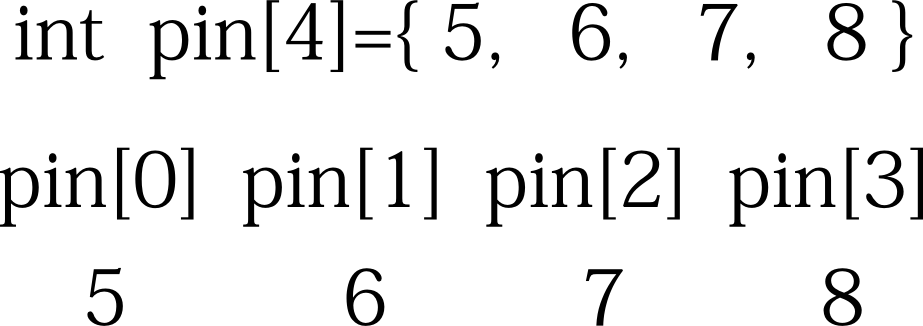
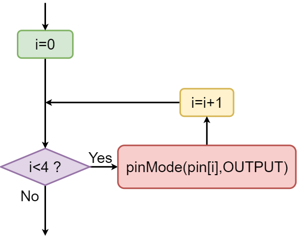
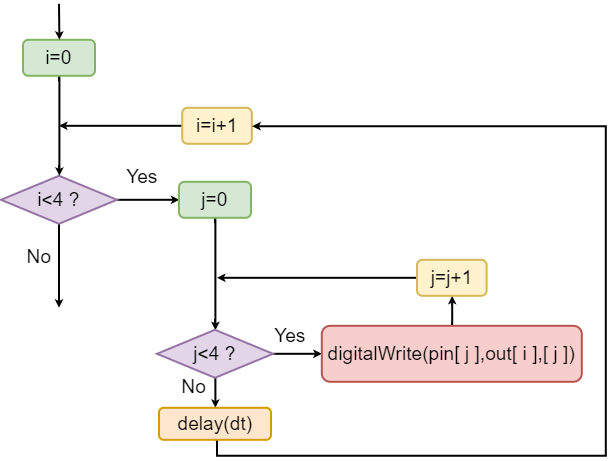

|
| //
進階寫法 int pin[4]={5,6,7,8}; int dt=1000;//delay time void setup() { for(int i=0; i<4; i=i+1) { pinMode( pin[i] , OUTPUT); } } void loop() { digitalWrite(in1,HIGH); digitalWrite(in2,LOW); digitalWrite(in3,LOW); digitalWrite(in4,LOW); delay(dt); digitalWrite(in1,LOW); digitalWrite(in2,HIGH); digitalWrite(in3,LOW); digitalWrite(in4,LOW); delay(dt); digitalWrite(in1,LOW); digitalWrite(in2,LOW); digitalWrite(in3,HIGH); digitalWrite(in4,LOW); delay(dt); digitalWrite(in1,LOW); digitalWrite(in2,LOW); digitalWrite(in3,LOW); digitalWrite(in4,HIGH); delay(dt); } } |
  pinMode( 5 , OUTPUT); pinMode( 6 , OUTPUT); pinMode( 7 , OUTPUT); pinMode( 8 , OUTPUT); |
| 二維陣列 int ar[2][3]={{1,2,3},{4,5,6}}; ar[0][0] 1 ar[0][1] 2 ar[0][2] 3 ar[1][0] 4 ar[1][1] 5 ar[1][2] 6 |
| [0] | [1] | [2] | |
| [0] | 1 | 2 | 3 |
| [1] | 4 | 4 | 6 |
|
|
| //
進階寫法 int pin[4]={5,6,7,8}; int out[4][4]={{1,0,0,0},{0,1,0,0},{0,0,1,0},{0,0,0,1}}; int dt=1000;//delay time void setup() { for(int i=0;i<4;i++) pinMode( pin[i] , OUTPUT); } void loop() { for (int i=0;i<4;i++) { for(int j=0;j<4;j++) //四支腳分別送一次 { digitalWrite(pin[j],out[i][j]); } delay(dt); } } |
for (int i=0;i<4;i++) { for(int j=0;j<4;j++) { digitalWrite(pin[j],out[i],[j]); } delay(dt); } |
 |
| int out[4][4]={{1,0,0,0},{0,1,0,0},{0,0,1,0},{0,0,0,1}} |
|
|
|
|
| 練習 反向循環 |
| 練習 來回循環 |
| 一次亮兩個 |
| //
進階寫法 int pin[4]={5,6,7,8}; int out[4][4]={{1,1,0,0},{0,1,1,0},{0,0,1,1},{1,0,0,1}}; int dt=1000;//delay time void setup() { for(int i=0;i<4;i++) pinMode( pin[i] , OUTPUT); } void loop() { for (int i=0;i<4;i++) { for(int j=0;j<4;j++) { digitalWrite(pin[j],out[i][j]); } delay(dt); } } |
| int out[4][4]={{1,1,0,0},{0,1,1,0},{0,0,1,1},{1,0,0,1}} |
|
|
|
|